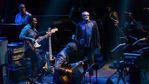
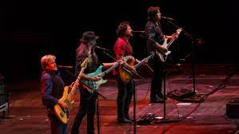

The music that we now know as Yacht Rock was not referred to as such during its peak years. In fact, the term was only coined as recently as 2005. TV writer, JD Ryznar coined the term after noticing similarities between Steely Dan, Toto, and The Doobie Brothers. He found that the band members collaborated frequently with each other, and their album covers would often feature pictures of guys on boats.

In fact, Ryznar wrote and directed an online video miniseries Yacht Rock which told fictionalized accounts about the bands of the genre in the 1970s. While the series wasn't necessarily popular, it helped coin the term and helped categorize similar sounding bands into a conglomerate. This would inspire dedicated playlists on music streaming platforms and even a SiriusXM radio station dedicated to the subgenre.
During the 1970s and 1980s, all of the yacht rock bands were categorized under the broad subgenre, soft rock. This would refer to acts that had the style of a singer-songwriter, morphed with commercial pop productions for radio friendly songs. The bands would often have straightforward melodies with bigger production styles. While all yacht rock bands can be considered as part of the soft rock genre, not all soft rock musicians can be placed under the yacht rock niche.

The qualifications for a band to be considered yacht rock vary depending on who you ask. Music Critic Matt Collar believes the rules for yacht rock to be “keeping a song smooth, even when it grooves, with more emphasis on melody than the beat; keep the emotions light, even when the sentiment turns sad, and always keep it catchy.” This means not every song in a band's discography will fall under the criteria for the genre.